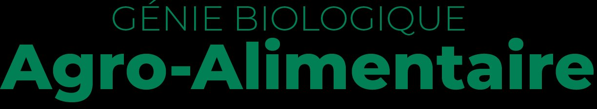
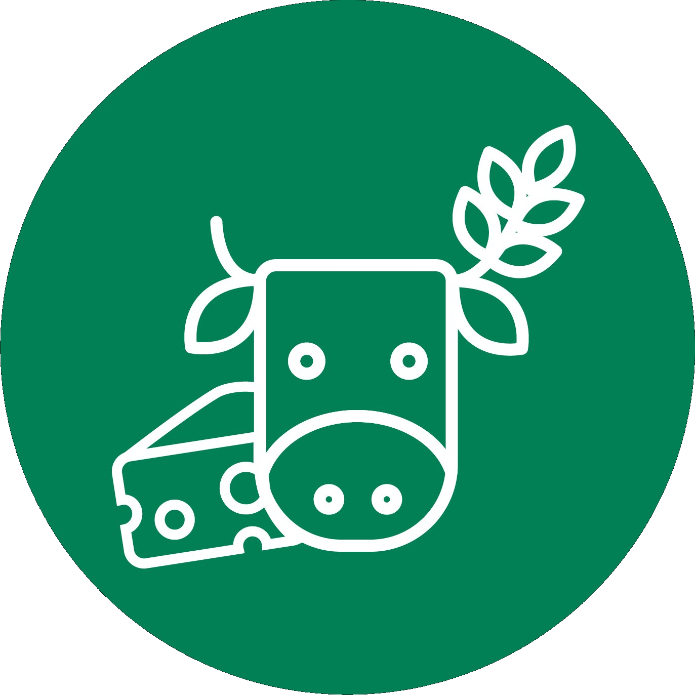

Parcours Sciences de l'Aliment et Biotechnologies — Campus de Villers-lès-Nancy
Depuis septembre 2023, j'étudie à l'IUT Nancy-Brabois dans le département Génie Biologique — une formation en 3 ans alliant sciences du vivant, alimentation et biotechnologies.


Le BUT Génie Biologique est un diplôme national de niveau bac+3 (grade licence, 180 ECTS) qui forme des techniciens supérieurs et assistants ingénieurs dans les domaines de la biologie appliquée, de l'alimentation et des biotechnologies.
La formation totalise 2000 heures en cours magistraux, travaux dirigés et travaux pratiques en petits groupes (12 étudiants en TP, 24 en TD). Elle inclut plus de 600 heures de SAé — des projets en situation professionnelle réelle — et 3 stages progressifs tout au long du cursus.
↗ Programme officiel nationalLes 5 compétences visées :
Protocoles d'analyse sur matières premières et produits finis, dans une démarche qualité.
Concevoir et conduire des expériences avec rigueur scientifique.
Démarches QHSE dans les industries alimentaires et biotechnologiques.
Conduire une ligne de production et suivre ses indicateurs qualité et rendement.
Participer à des projets R&D et développer de nouveaux produits.
Le BUT GB propose 5 spécialisations. Chaque étudiant en choisit une dès la 1ère année — elle oriente toutes les matières, les SAé et les stages sur les 3 années.
Le parcours SAB (Sciences de l'Aliment et Biotechnologie) est centré sur tout ce qui touche à la fabrication, l'analyse et la qualité des aliments et des bioproduits. Concrètement, on apprend à :
Trois stages jalonnent le cursus : 2 à 4 semaines en 1ère année, 2 mois en 2ème année, 3 mois en 3ème année — pour acquérir une vraie expérience terrain dans des secteurs comme l'agroalimentaire, la cosmétique, le pharmaceutique ou les biotechnologies.
La formation dure 3 ans (6 semestres). Les ressources communes à tous les parcours GB côtoient des matières spécifiques au SAB.
« Décrivez ici pourquoi vous avez choisi ce parcours, ce qu'il représente pour vous, ce que vous y appréciez le plus... »
Le BUT SAB permet une insertion directe à bac+3 dans les industries agroalimentaires, pharmaceutiques, cosmétiques ou biotechnologiques, ou une poursuite d'études.